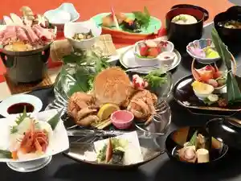
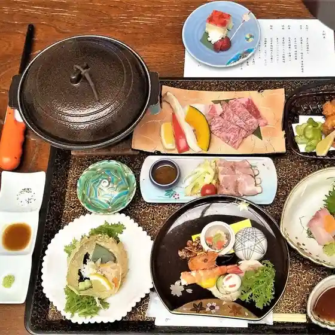
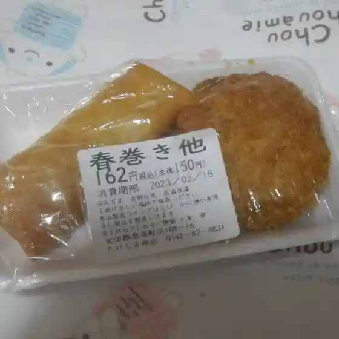
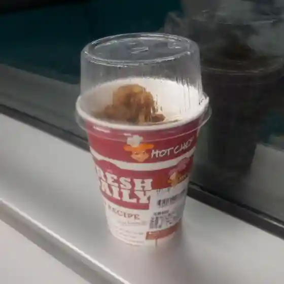
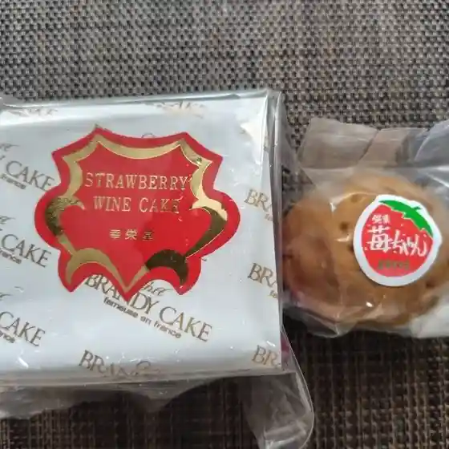
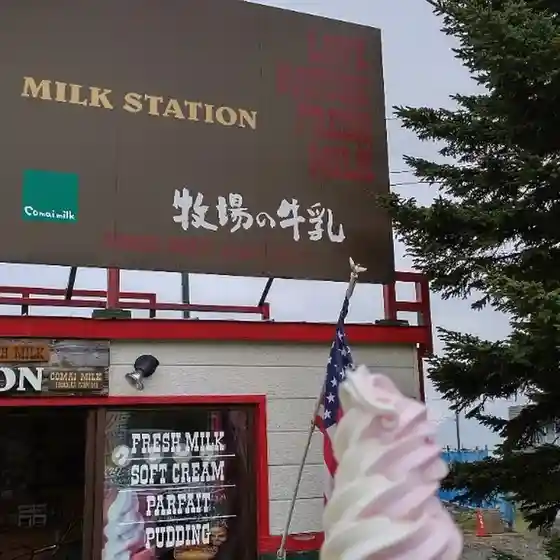
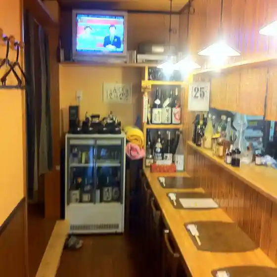

Toyoura
Toyoura · Hokkaido
Toyoura
Highlighted on the Hokkaido map.
Stay
天然豊浦温泉 しおさい

Tennen Toyoura Onsen Shiosai
Dining
しおさい

Shiosai
たけしま商店

Takeshima Shouten
セイコーマート やじま豊浦店

Seikoomaato Yajima Toyoura Mise
おあしす

Oashisu
幸栄堂

Yukie Dou
とぼっくす

Tobokkusu
佐竹製菓

Satake Seika
居酒屋かあさん

Izakaya Kaasan
道の駅 とようら テイクアウトコーナー
Michi No Eki Toyoura Teikuautokoonaa
かっこう
Kakkou
ベリーファーム とようら
Beriifaamu Toyoura
なちゅらる
Nachuraru
渚のしらべ
Nagisa Noshirabe
初ちゃん
Hatsu Chan
オーシャンベリー
Ooshanberii
とり勝
Tori Kachi
勝寿し
Katsutoshi Shi
hug-re家 音璃
Hug-Re Ie Oto Ri
永楽食堂
Eiraku Shokudou
民宿 みね
Minshuku Mine
ビックリ!!ギョー店
Bikkuri ! ! Gyoo Mise
ナミヘイピザ
Namiheipiza
食事処 あらた
Shokuji Tokoro Arata
道の駅 とようら
Michi No Eki Toyoura
Sights
Rebun Hana Coast
Rebun Hana Coast